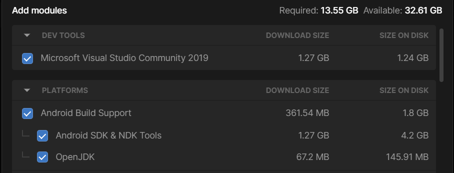
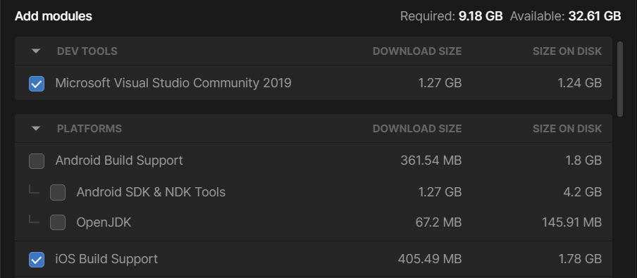
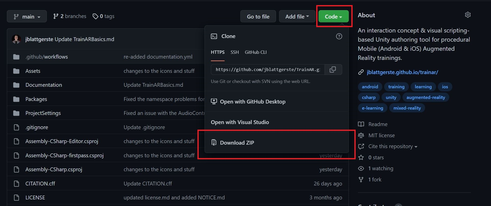
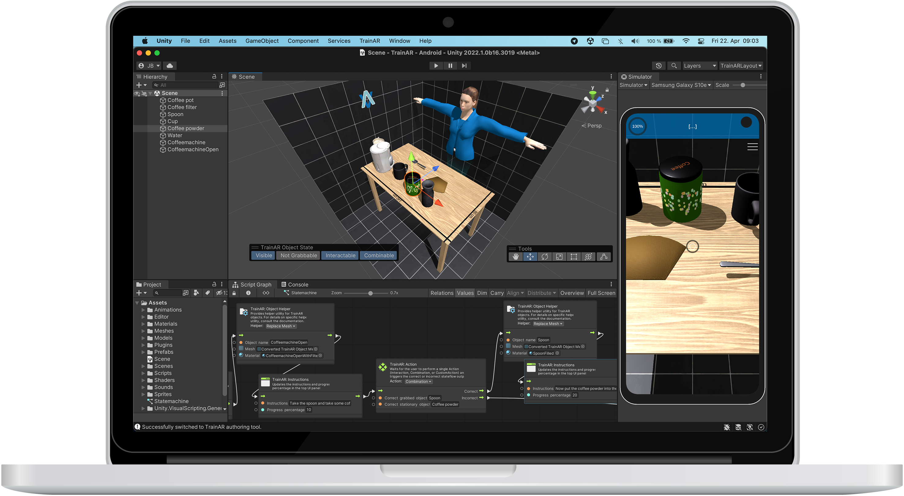

Installation & Setup
Download & Install Unity
First, download and install the Unity Hub. The Unity Hub allows you to easily install the correct Unity Editor version and corresponding packages that are needed for platform specific deployments.
After installing Unity HUB, install Unity Version 2022.1.0b16 as described in the Unity Hub Documentation. When installing Unity, make sure to also indlude the correct modules, depending on which kind of device you want to deploy the TrainAR trainings to:
For Android choose Android Build Support. Make sure to have also Android SDK & NDK Tools and OpenJDK checked:

For iOS, choose iOS Build Support: 
You can also install both at the same time to deploy to both devices. This works on every operating system (Linux, Windows and macOS), though for iOS, XCode on macOS is necessary to deploy to iOS devices after building the App.
Futhremore, if you do not already have an IDE (Integrated Development Environment) installed and you plan to potentially use C# programming to expand TrainAR, we recommend also installing Microsoft Visual Studio Community 2019 with Unity.
Get the TrainAR Authoring Tool
After installing Unity we have to setup the TrainAR Authoring tool. There are two ways to accomplish this.
- Creating a Fork of the TrainAR Repository
- Manually downloading TrainAR
We strongly recommend using the first approach.
1. Creating & Cloning a TrainAR Repository Fork
- Create a GitHub account.
- Fork the TrainAR repository into your account
- Download the GitHub Desktop client
- Clone the forked repository in the GitHub client
- Open the Unity HUB
- Add the now cloned repository through clicking "Open" and then selecting the folder that was downloaded in the GitHub client
TrainAR should now appear in the list of projects and "2022.1.0b16" (or an alternative 2022.1.XXXX version) should be selected as the Editor version.

2. Manually downloading TrainAR
Alternatively, you can manually download TrainAR from the GitHub repository as a .zip file, unpack it and then open it in the Unity Hub by clicking "Open" and then selecting the folder that was downloaded in the GitHub client.
While faster, we dont recommend this approach, as version control is a very helpful tool to prevent losing progress, e.g. because of errors or problems in the TrainAR framework.

Opening the TrainAR Authoring Tool
To now open the TrainAR Authoring Tool, select the "TrainAR" project in the Unity HUB to open it. After Unity is fully loaded, the top-panel menu should show "TrainAR" as an option, click this and then "Open TrainAR Authoring Tool". You should now see the TrainAR Authoring Tool like this:
